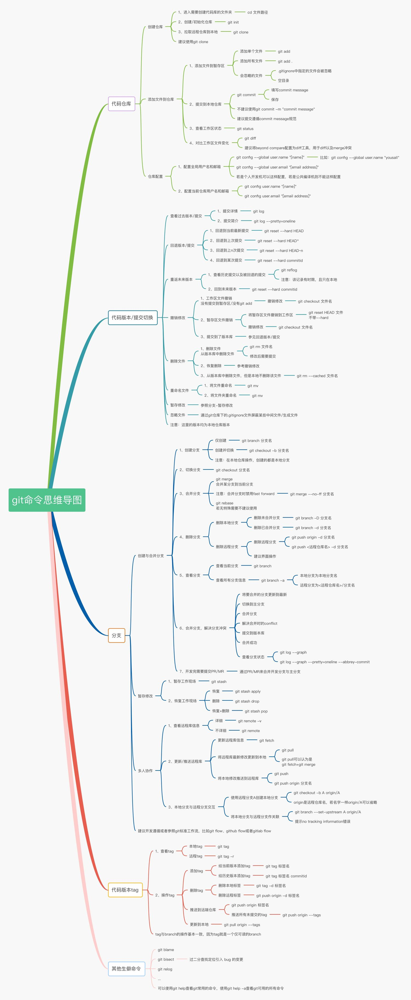

Git 基本使用
概念
当我们看到 Git 的时候，涌现上来的第一个想法就是 Git 是什么，我们为什么要使用 Git ？
首先解决一下第一个问题，Git 是什么？
Git 官网上有一段说明: Git is a free and open source distributed version control system designed to handle everything from small to very large projects with speed and efficiency. 翻译一下就是说：Git 是一个免费的开源分布式版本控制系统，旨在快速且高效地处理从小型到大型的所有项目。
这里简单说明一下版本控制系统是什么，打个比方，我们有一段完整的代码，不过现在我们需要在此基础上进行新功能的开发，开发完成之后上线了，不过很不幸，上线之后出现了很多 bug，那应该怎么处理，不用想，第一件事肯定是回滚，采用之前运行正确的代码，如果我们没有采用 Git ，那我们就需要保存一份之前的源代码了，如果我们采用 Git ，那么我们可以很方便的将代码切换到历史中的每一条记录，这就叫做版本控制。
介绍完了什么是 Git ，那么我们为什么要用 Git 呢？
首先，互联网公司都在用 Git ，当你参加工作的时候，无法避免地会使用 Git ，比如暑期在字节实习的时候，公司内部自己搭建了一个 Git lab，代码的提交都是使用 Git 进行的，你如果不知道怎么使用 Git ，那么你写好的代码就只能让其他同学帮忙上传，效率极低，而且同学不可能一直帮你吧，所以说学习 Git 很必要。
其次，Git 的分布式版本控制系统真的很棒，在公司里面一个项目往往是一组同学一块开发，不可能单枪匹马，不同的同学负责不同的模块，这个时候 Git 的作用就更明显了，开发不同 feature 的同学统一从仓库上拉取代码，然后在本地另外创建一个分支进行新功能开发，开发完成，测试通过，代码进行 review 之后合入主干分支，极大的提高了编码效率。
安装
访问 Git 官网 下载，如果是 Linux 系统，基本上都会预装 Git ，如果没有，对于 Ubuntu 来说可以使用下面的命令进行安装。
1 | sudo apt install git -all |
安装完成之后，进入命令行输入下方命令进行检查，如果输出版本号，则说明安装成功。
1 | $ git --version |
使用
首先介绍一下 Git 中的基本术语：工作区, 暂存区，版本库。
- 工作区：就是在电脑里能看到的目录，或者直接认为是我们在编写项目的目录。
- 暂存区：一般存放在
.git目录下的index文件中，所以我们把暂存区有时也叫作索引 (index)。 - 版本库：工作区有一个隐藏目录
.git，不算工作区，而是Git的版本库，提交到这里都会形成一个版本，想要要切换到任意版本都很简单。
下面我们就开始介绍一些常用的命令
配置
1 | # 配置全局用户，去掉 --global 参数表示配置当前目录用户 |
基本操作
创建仓库
有两种方式，下面分别讲解：
一种是在本地直接创建，使用 git init，创建之后会生成一个 .git 目录
- 在当前目录进行创建：
git init - 在指定目录进行创建：
git init repo
另外一种方式是从远程仓库克隆下来，使用 git clone
- 克隆到目录，目录名为仓库名：
git clone - 克隆到指定目录：
git clone <dir>
添加文件
git add 命令可将该文件添加到暂存区，可以支持多个文件以及通配符
1 | # 添加一个文件 |
查看状态
git status 查看仓库当前的状态，显示有变更的文件。
1 | $ echo "Hello World" > README.md |
查看差异
git diff 可以比较同一文件在暂存区和工作区的差异。
1 | $ git diff README.md |
提交本地仓库
git commit 可以将代码添加到本地仓库，添加到这里的代码之后可以恢复。
回退版本
get reset 可以将代码回退到指定的版本，默认使用 --mixed 。
git reset --mixed：回退到指定版本，工作区文件内容保持不变，但是会删除暂存区。git reset --soft：回退到指定的版本，保留工作目录和暂存区中的内容，并把重置 HEAD 所带来的新的差异放进暂存区。git reset --hard： 撤销工作区中所有未提交的修改内容，将暂存区与工作区都回到指定版本。
查看提交日志
git log 可以查看已经提交的日志记录
1 | $ git log |
分支操作
创建分支
git branch <branch name> 或者 git checkout -b <branch name> 都可以创建分支
1 | $ git checkout -b branch1 |
切换分支
git checkout <branch name> 或者 git switch <branch name>，使用 git checkout - 可以切换到上一次所在的分支哦
1 | $ git checkout branch1 |
查看分支
git branch 查看所有的分支
1 | $ git branch |
删除分支
git branch -d/-D <branch name>
1 | $ git branch -D branch2 |
重命名分支
git branch -m/-M <old> <new>
1 | $ git branch -m branch1 dev |
合并分支
git merge 可以将当前分支和指定分支提交合并
1 | $ git branch |
标签操作
创建标签
Git 中标签有两种：
- 轻量标签：
git tag <tag name>- 不保存其他任何信息，相当于某个提交的信息
- 附注标签：
git tag -a <tag name>- 可以显示打标签者的信息，时间和附注消息，然后显示具体的提交信息
也可以指定某个提交打标签: git tag xx <commit id>
删除标签
删除本地标签
git tag -d <tag name> 删除标签
1 | $ git tag -d v1.0 |
删除远程标签
1 | git push origin :refs/tags/<tag name> |
查看标签
git tag 可以显示所有的标签，我们也可以使用 git tag -l/--list，并且可以指定特定模式匹配
显示标签内容
git show <tag name> 可以展示标签对应的提交信息，对于附注标签还可以显示添加的额外信息
1 | $ git tag v1.0 -m "tag demo" |
远程仓库
关联仓库
1 | # 一般将 name 取为 origin |
拉取最新提交
1 | # 只拉取最新提交 |
推送最新提交
本地写完代码之后，提交到仓库中
1 | git push [name] [branch name] |
忽略某些文件
有时候，我们有些文件不想要提交到仓库中间，比如说编译的中间仓库，那么我们可以创建一个 .gitignore 文件，并且在其中进行配置
1 | # 忽略 .vscode 目录，无论根目录下的还是子目录下的 |
更加详细的见：gitignore
规范
Git 的提交应该符合一定的规定，这样方便操作，比如
1 | type: <description> |
type 一般为下面的类型：
feat: 新功能（feature）fix: 修补bugdocs: 文档（documentation）style: 格式（不影响代码运行的变动）refactor: 重构（即不是新增功能，也不是修改bug的代码变动）test: 增加测试chore: 构建过程或辅助工具的变动add: 添加某个文件等change: 对某个文件进行改变，但不改变原来的功能beautify: 对界面进行美化
此外也可以参考： 约定式提交
思维导图
生活杂笔，学习杂记，偶尔随便写写东西。